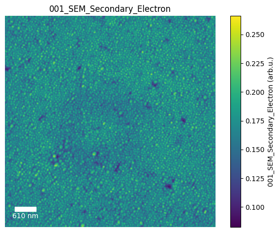
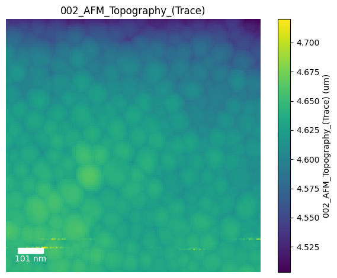
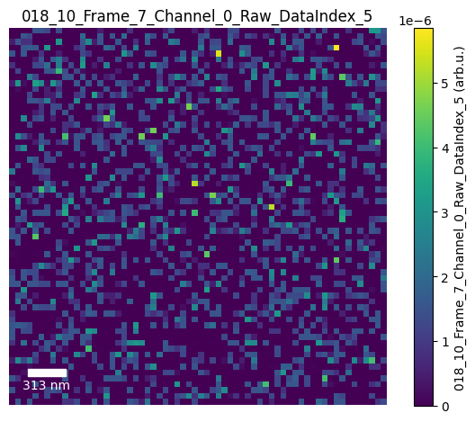

Parsing .fsexp FusionScope HDF5 Experiment Files#
Created on Fri Jul 31 2026
Author: Aidan Swanger
[2]:
# Install SciFiReaders
%pip install --no-cache-dir git+https://github.com/pycroscopy/SciFiReaders.git@main
Collecting git+https://github.com/aswanger011/SciFiReadersAS.git@main
Cloning https://github.com/aswanger011/SciFiReadersAS.git (to revision main) to /tmp/pip-req-build-t0fkwv5v
Running command git clone --filter=blob:none --quiet https://github.com/aswanger011/SciFiReadersAS.git /tmp/pip-req-build-t0fkwv5v
Resolved https://github.com/aswanger011/SciFiReadersAS.git to commit 2c4bd86eef59e4ee837f776c015361227a0926a9
Installing build dependencies ... done
Getting requirements to build wheel ... done
Preparing metadata (pyproject.toml) ... done
Requirement already satisfied: setuptools in /usr/local/lib/python3.12/dist-packages (from SciFiReaders==0.12.7) (75.2.0)
Requirement already satisfied: numpy in /usr/local/lib/python3.12/dist-packages (from SciFiReaders==0.12.7) (2.0.2)
Requirement already satisfied: toolz in /usr/local/lib/python3.12/dist-packages (from SciFiReaders==0.12.7) (0.12.1)
Collecting cytoolz (from SciFiReaders==0.12.7)
Downloading cytoolz-1.1.0-cp312-cp312-manylinux2014_x86_64.manylinux_2_17_x86_64.manylinux_2_28_x86_64.whl.metadata (5.2 kB)
Requirement already satisfied: dask>=2.20.0 in /usr/local/lib/python3.12/dist-packages (from SciFiReaders==0.12.7) (2026.7.0)
Collecting sidpy>=0.11.2 (from SciFiReaders==0.12.7)
Downloading sidpy-0.12.9-py2.py3-none-any.whl.metadata (3.3 kB)
Requirement already satisfied: numba in /usr/local/lib/python3.12/dist-packages (from SciFiReaders==0.12.7) (0.60.0)
Requirement already satisfied: ipython>=7.1.0 in /usr/local/lib/python3.12/dist-packages (from SciFiReaders==0.12.7) (7.34.0)
Collecting pyUSID (from SciFiReaders==0.12.7)
Downloading pyUSID-0.0.12-py2.py3-none-any.whl.metadata (2.4 kB)
Collecting pyNSID (from SciFiReaders==0.12.7)
Downloading pyNSID-0.0.7.2-py2.py3-none-any.whl.metadata (1.4 kB)
Requirement already satisfied: gdown in /usr/local/lib/python3.12/dist-packages (from SciFiReaders==0.12.7) (5.2.2)
Collecting mrcfile (from SciFiReaders==0.12.7)
Downloading mrcfile-1.5.4-py2.py3-none-any.whl.metadata (7.0 kB)
Collecting pycroscopy-gwyfile (from SciFiReaders==0.12.7)
Downloading pycroscopy_gwyfile-1.0.2-py2.py3-none-any.whl.metadata (3.5 kB)
Requirement already satisfied: scipy>=1.11 in /usr/local/lib/python3.12/dist-packages (from SciFiReaders==0.12.7) (1.16.3)
Requirement already satisfied: click>=8.1 in /usr/local/lib/python3.12/dist-packages (from dask>=2.20.0->SciFiReaders==0.12.7) (8.4.2)
Requirement already satisfied: cloudpickle>=3.0.0 in /usr/local/lib/python3.12/dist-packages (from dask>=2.20.0->SciFiReaders==0.12.7) (3.1.2)
Requirement already satisfied: fsspec>=2021.09.0 in /usr/local/lib/python3.12/dist-packages (from dask>=2.20.0->SciFiReaders==0.12.7) (2025.3.0)
Requirement already satisfied: packaging>=20.0 in /usr/local/lib/python3.12/dist-packages (from dask>=2.20.0->SciFiReaders==0.12.7) (26.2)
Requirement already satisfied: partd>=1.4.0 in /usr/local/lib/python3.12/dist-packages (from dask>=2.20.0->SciFiReaders==0.12.7) (1.4.2)
Requirement already satisfied: pyyaml>=5.4.1 in /usr/local/lib/python3.12/dist-packages (from dask>=2.20.0->SciFiReaders==0.12.7) (6.0.3)
Collecting jedi>=0.16 (from ipython>=7.1.0->SciFiReaders==0.12.7)
Downloading jedi-0.20.0-py2.py3-none-any.whl.metadata (23 kB)
Requirement already satisfied: decorator in /usr/local/lib/python3.12/dist-packages (from ipython>=7.1.0->SciFiReaders==0.12.7) (4.4.2)
Requirement already satisfied: pickleshare in /usr/local/lib/python3.12/dist-packages (from ipython>=7.1.0->SciFiReaders==0.12.7) (0.7.5)
Requirement already satisfied: traitlets>=4.2 in /usr/local/lib/python3.12/dist-packages (from ipython>=7.1.0->SciFiReaders==0.12.7) (5.7.1)
Requirement already satisfied: prompt-toolkit!=3.0.0,!=3.0.1,<3.1.0,>=2.0.0 in /usr/local/lib/python3.12/dist-packages (from ipython>=7.1.0->SciFiReaders==0.12.7) (3.0.52)
Requirement already satisfied: pygments in /usr/local/lib/python3.12/dist-packages (from ipython>=7.1.0->SciFiReaders==0.12.7) (2.20.0)
Requirement already satisfied: backcall in /usr/local/lib/python3.12/dist-packages (from ipython>=7.1.0->SciFiReaders==0.12.7) (0.2.0)
Requirement already satisfied: matplotlib-inline in /usr/local/lib/python3.12/dist-packages (from ipython>=7.1.0->SciFiReaders==0.12.7) (0.2.2)
Requirement already satisfied: pexpect>4.3 in /usr/local/lib/python3.12/dist-packages (from ipython>=7.1.0->SciFiReaders==0.12.7) (4.9.0)
Collecting dask-ml>=2025.1.0 (from sidpy>=0.11.2->SciFiReaders==0.12.7)
Downloading dask_ml-2025.1.0-py3-none-any.whl.metadata (6.0 kB)
Requirement already satisfied: h5py>=2.6.0 in /usr/local/lib/python3.12/dist-packages (from sidpy>=0.11.2->SciFiReaders==0.12.7) (3.16.0)
Requirement already satisfied: matplotlib>=2.0.0 in /usr/local/lib/python3.12/dist-packages (from sidpy>=0.11.2->SciFiReaders==0.12.7) (3.10.0)
Collecting distributed>=2.0.0 (from sidpy>=0.11.2->SciFiReaders==0.12.7)
Downloading distributed-2026.7.1-py3-none-any.whl.metadata (3.4 kB)
Requirement already satisfied: six in /usr/local/lib/python3.12/dist-packages (from sidpy>=0.11.2->SciFiReaders==0.12.7) (1.17.0)
Requirement already satisfied: joblib>=0.11.0 in /usr/local/lib/python3.12/dist-packages (from sidpy>=0.11.2->SciFiReaders==0.12.7) (1.5.3)
Requirement already satisfied: ipywidgets in /usr/local/lib/python3.12/dist-packages (from sidpy>=0.11.2->SciFiReaders==0.12.7) (7.7.1)
Requirement already satisfied: ipykernel in /usr/local/lib/python3.12/dist-packages (from sidpy>=0.11.2->SciFiReaders==0.12.7) (6.17.1)
Requirement already satisfied: scikit-learn>=1.6.1 in /usr/local/lib/python3.12/dist-packages (from sidpy>=0.11.2->SciFiReaders==0.12.7) (1.6.1)
Collecting ase (from sidpy>=0.11.2->SciFiReaders==0.12.7)
Downloading ase-3.29.0-py3-none-any.whl.metadata (4.4 kB)
Collecting ipympl (from sidpy>=0.11.2->SciFiReaders==0.12.7)
Downloading ipympl-0.10.0-py3-none-any.whl.metadata (9.4 kB)
Requirement already satisfied: dill in /usr/local/lib/python3.12/dist-packages (from sidpy>=0.11.2->SciFiReaders==0.12.7) (0.3.8)
Collecting pyswarms>=1.3.0 (from sidpy>=0.11.2->SciFiReaders==0.12.7)
Downloading pyswarms-1.3.0-py2.py3-none-any.whl.metadata (33 kB)
Requirement already satisfied: beautifulsoup4 in /usr/local/lib/python3.12/dist-packages (from gdown->SciFiReaders==0.12.7) (4.13.5)
Requirement already satisfied: filelock in /usr/local/lib/python3.12/dist-packages (from gdown->SciFiReaders==0.12.7) (3.29.7)
Requirement already satisfied: requests[socks] in /usr/local/lib/python3.12/dist-packages (from gdown->SciFiReaders==0.12.7) (2.32.4)
Requirement already satisfied: tqdm in /usr/local/lib/python3.12/dist-packages (from gdown->SciFiReaders==0.12.7) (4.67.3)
Requirement already satisfied: llvmlite<0.44,>=0.43.0dev0 in /usr/local/lib/python3.12/dist-packages (from numba->SciFiReaders==0.12.7) (0.43.0)
Requirement already satisfied: pillow in /usr/local/lib/python3.12/dist-packages (from pyUSID->SciFiReaders==0.12.7) (11.3.0)
Requirement already satisfied: psutil in /usr/local/lib/python3.12/dist-packages (from pyUSID->SciFiReaders==0.12.7) (5.9.5)
Collecting dask-glm>=0.2.0 (from dask-ml>=2025.1.0->sidpy>=0.11.2->SciFiReaders==0.12.7)
Downloading dask_glm-0.4.0-py3-none-any.whl.metadata (2.4 kB)
Requirement already satisfied: multipledispatch>=0.4.9 in /usr/local/lib/python3.12/dist-packages (from dask-ml>=2025.1.0->sidpy>=0.11.2->SciFiReaders==0.12.7) (1.0.0)
Requirement already satisfied: pandas>=2.0 in /usr/local/lib/python3.12/dist-packages (from dask-ml>=2025.1.0->sidpy>=0.11.2->SciFiReaders==0.12.7) (2.2.2)
Collecting dask>=2.20.0 (from SciFiReaders==0.12.7)
Downloading dask-2026.7.1-py3-none-any.whl.metadata (3.8 kB)
Requirement already satisfied: jinja2>=2.10.3 in /usr/local/lib/python3.12/dist-packages (from distributed>=2.0.0->sidpy>=0.11.2->SciFiReaders==0.12.7) (3.1.6)
Requirement already satisfied: locket>=1.0.0 in /usr/local/lib/python3.12/dist-packages (from distributed>=2.0.0->sidpy>=0.11.2->SciFiReaders==0.12.7) (1.0.0)
Requirement already satisfied: msgpack>=1.0.2 in /usr/local/lib/python3.12/dist-packages (from distributed>=2.0.0->sidpy>=0.11.2->SciFiReaders==0.12.7) (1.2.1)
Collecting sortedcontainers>=2.0.5 (from distributed>=2.0.0->sidpy>=0.11.2->SciFiReaders==0.12.7)
Downloading sortedcontainers-2.4.0-py2.py3-none-any.whl.metadata (10 kB)
Collecting tblib!=3.2.0,!=3.2.1,>=1.6.0 (from distributed>=2.0.0->sidpy>=0.11.2->SciFiReaders==0.12.7)
Downloading tblib-3.2.2-py3-none-any.whl.metadata (27 kB)
Requirement already satisfied: tornado>=6.2.0 in /usr/local/lib/python3.12/dist-packages (from distributed>=2.0.0->sidpy>=0.11.2->SciFiReaders==0.12.7) (6.5.7)
Collecting zict>=3.0.0 (from distributed>=2.0.0->sidpy>=0.11.2->SciFiReaders==0.12.7)
Downloading zict-3.0.0-py2.py3-none-any.whl.metadata (899 bytes)
Requirement already satisfied: parso<0.9.0,>=0.8.6 in /usr/local/lib/python3.12/dist-packages (from jedi>=0.16->ipython>=7.1.0->SciFiReaders==0.12.7) (0.8.7)
Requirement already satisfied: contourpy>=1.0.1 in /usr/local/lib/python3.12/dist-packages (from matplotlib>=2.0.0->sidpy>=0.11.2->SciFiReaders==0.12.7) (1.3.3)
Requirement already satisfied: cycler>=0.10 in /usr/local/lib/python3.12/dist-packages (from matplotlib>=2.0.0->sidpy>=0.11.2->SciFiReaders==0.12.7) (0.12.1)
Requirement already satisfied: fonttools>=4.22.0 in /usr/local/lib/python3.12/dist-packages (from matplotlib>=2.0.0->sidpy>=0.11.2->SciFiReaders==0.12.7) (4.63.0)
Requirement already satisfied: kiwisolver>=1.3.1 in /usr/local/lib/python3.12/dist-packages (from matplotlib>=2.0.0->sidpy>=0.11.2->SciFiReaders==0.12.7) (1.5.0)
Requirement already satisfied: pyparsing>=2.3.1 in /usr/local/lib/python3.12/dist-packages (from matplotlib>=2.0.0->sidpy>=0.11.2->SciFiReaders==0.12.7) (3.3.2)
Requirement already satisfied: python-dateutil>=2.7 in /usr/local/lib/python3.12/dist-packages (from matplotlib>=2.0.0->sidpy>=0.11.2->SciFiReaders==0.12.7) (2.9.0.post0)
Requirement already satisfied: ptyprocess>=0.5 in /usr/local/lib/python3.12/dist-packages (from pexpect>4.3->ipython>=7.1.0->SciFiReaders==0.12.7) (0.7.0)
Requirement already satisfied: wcwidth in /usr/local/lib/python3.12/dist-packages (from prompt-toolkit!=3.0.0,!=3.0.1,<3.1.0,>=2.0.0->ipython>=7.1.0->SciFiReaders==0.12.7) (0.8.2)
Requirement already satisfied: attrs in /usr/local/lib/python3.12/dist-packages (from pyswarms>=1.3.0->sidpy>=0.11.2->SciFiReaders==0.12.7) (26.1.0)
Requirement already satisfied: future in /usr/local/lib/python3.12/dist-packages (from pyswarms>=1.3.0->sidpy>=0.11.2->SciFiReaders==0.12.7) (1.0.0)
Requirement already satisfied: threadpoolctl>=3.1.0 in /usr/local/lib/python3.12/dist-packages (from scikit-learn>=1.6.1->sidpy>=0.11.2->SciFiReaders==0.12.7) (3.6.0)
Requirement already satisfied: typing_extensions>=4.13.1 in /usr/local/lib/python3.12/dist-packages (from ase->sidpy>=0.11.2->SciFiReaders==0.12.7) (4.16.0)
Requirement already satisfied: soupsieve>1.2 in /usr/local/lib/python3.12/dist-packages (from beautifulsoup4->gdown->SciFiReaders==0.12.7) (2.8.4)
Requirement already satisfied: debugpy>=1.0 in /usr/local/lib/python3.12/dist-packages (from ipykernel->sidpy>=0.11.2->SciFiReaders==0.12.7) (1.8.15)
Requirement already satisfied: jupyter-client>=6.1.12 in /usr/local/lib/python3.12/dist-packages (from ipykernel->sidpy>=0.11.2->SciFiReaders==0.12.7) (7.4.9)
Requirement already satisfied: nest-asyncio in /usr/local/lib/python3.12/dist-packages (from ipykernel->sidpy>=0.11.2->SciFiReaders==0.12.7) (1.6.0)
Requirement already satisfied: pyzmq>=17 in /usr/local/lib/python3.12/dist-packages (from ipykernel->sidpy>=0.11.2->SciFiReaders==0.12.7) (26.2.1)
Requirement already satisfied: ipython-genutils~=0.2.0 in /usr/local/lib/python3.12/dist-packages (from ipywidgets->sidpy>=0.11.2->SciFiReaders==0.12.7) (0.2.0)
Requirement already satisfied: widgetsnbextension~=3.6.0 in /usr/local/lib/python3.12/dist-packages (from ipywidgets->sidpy>=0.11.2->SciFiReaders==0.12.7) (3.6.10)
Requirement already satisfied: jupyterlab-widgets>=1.0.0 in /usr/local/lib/python3.12/dist-packages (from ipywidgets->sidpy>=0.11.2->SciFiReaders==0.12.7) (3.0.16)
Requirement already satisfied: charset_normalizer<4,>=2 in /usr/local/lib/python3.12/dist-packages (from requests[socks]->gdown->SciFiReaders==0.12.7) (3.4.9)
Requirement already satisfied: idna<4,>=2.5 in /usr/local/lib/python3.12/dist-packages (from requests[socks]->gdown->SciFiReaders==0.12.7) (3.18)
Requirement already satisfied: urllib3<3,>=1.21.1 in /usr/local/lib/python3.12/dist-packages (from requests[socks]->gdown->SciFiReaders==0.12.7) (2.5.0)
Requirement already satisfied: certifi>=2017.4.17 in /usr/local/lib/python3.12/dist-packages (from requests[socks]->gdown->SciFiReaders==0.12.7) (2026.6.17)
Requirement already satisfied: PySocks!=1.5.7,>=1.5.6 in /usr/local/lib/python3.12/dist-packages (from requests[socks]->gdown->SciFiReaders==0.12.7) (1.7.1)
Collecting sparse>=0.15 (from dask-glm>=0.2.0->dask-ml>=2025.1.0->sidpy>=0.11.2->SciFiReaders==0.12.7)
Downloading sparse-0.19.0-py2.py3-none-any.whl.metadata (5.3 kB)
INFO: pip is looking at multiple versions of dask[array,dataframe] to determine which version is compatible with other requirements. This could take a while.
Requirement already satisfied: pyarrow>=16.0 in /usr/local/lib/python3.12/dist-packages (from dask[array,dataframe]>=2025.1.0->dask-ml>=2025.1.0->sidpy>=0.11.2->SciFiReaders==0.12.7) (18.1.0)
Requirement already satisfied: MarkupSafe>=2.0 in /usr/local/lib/python3.12/dist-packages (from jinja2>=2.10.3->distributed>=2.0.0->sidpy>=0.11.2->SciFiReaders==0.12.7) (3.0.3)
Requirement already satisfied: entrypoints in /usr/local/lib/python3.12/dist-packages (from jupyter-client>=6.1.12->ipykernel->sidpy>=0.11.2->SciFiReaders==0.12.7) (0.4)
Requirement already satisfied: jupyter-core>=4.9.2 in /usr/local/lib/python3.12/dist-packages (from jupyter-client>=6.1.12->ipykernel->sidpy>=0.11.2->SciFiReaders==0.12.7) (5.9.1)
Requirement already satisfied: pytz>=2020.1 in /usr/local/lib/python3.12/dist-packages (from pandas>=2.0->dask-ml>=2025.1.0->sidpy>=0.11.2->SciFiReaders==0.12.7) (2025.2)
Requirement already satisfied: tzdata>=2022.7 in /usr/local/lib/python3.12/dist-packages (from pandas>=2.0->dask-ml>=2025.1.0->sidpy>=0.11.2->SciFiReaders==0.12.7) (2026.3)
Requirement already satisfied: notebook>=4.4.1 in /usr/local/lib/python3.12/dist-packages (from widgetsnbextension~=3.6.0->ipywidgets->sidpy>=0.11.2->SciFiReaders==0.12.7) (6.5.7)
Requirement already satisfied: platformdirs>=2.5 in /usr/local/lib/python3.12/dist-packages (from jupyter-core>=4.9.2->jupyter-client>=6.1.12->ipykernel->sidpy>=0.11.2->SciFiReaders==0.12.7) (4.10.0)
Requirement already satisfied: argon2-cffi in /usr/local/lib/python3.12/dist-packages (from notebook>=4.4.1->widgetsnbextension~=3.6.0->ipywidgets->sidpy>=0.11.2->SciFiReaders==0.12.7) (25.1.0)
Requirement already satisfied: nbformat in /usr/local/lib/python3.12/dist-packages (from notebook>=4.4.1->widgetsnbextension~=3.6.0->ipywidgets->sidpy>=0.11.2->SciFiReaders==0.12.7) (5.10.4)
Requirement already satisfied: nbconvert>=5 in /usr/local/lib/python3.12/dist-packages (from notebook>=4.4.1->widgetsnbextension~=3.6.0->ipywidgets->sidpy>=0.11.2->SciFiReaders==0.12.7) (7.17.1)
Requirement already satisfied: Send2Trash>=1.8.0 in /usr/local/lib/python3.12/dist-packages (from notebook>=4.4.1->widgetsnbextension~=3.6.0->ipywidgets->sidpy>=0.11.2->SciFiReaders==0.12.7) (2.1.0)
Requirement already satisfied: terminado>=0.8.3 in /usr/local/lib/python3.12/dist-packages (from notebook>=4.4.1->widgetsnbextension~=3.6.0->ipywidgets->sidpy>=0.11.2->SciFiReaders==0.12.7) (0.18.1)
Requirement already satisfied: prometheus-client in /usr/local/lib/python3.12/dist-packages (from notebook>=4.4.1->widgetsnbextension~=3.6.0->ipywidgets->sidpy>=0.11.2->SciFiReaders==0.12.7) (0.25.0)
Requirement already satisfied: nbclassic>=0.4.7 in /usr/local/lib/python3.12/dist-packages (from notebook>=4.4.1->widgetsnbextension~=3.6.0->ipywidgets->sidpy>=0.11.2->SciFiReaders==0.12.7) (1.3.3)
Requirement already satisfied: notebook-shim>=0.2.3 in /usr/local/lib/python3.12/dist-packages (from nbclassic>=0.4.7->notebook>=4.4.1->widgetsnbextension~=3.6.0->ipywidgets->sidpy>=0.11.2->SciFiReaders==0.12.7) (0.2.4)
Requirement already satisfied: bleach!=5.0.0 in /usr/local/lib/python3.12/dist-packages (from bleach[css]!=5.0.0->nbconvert>=5->notebook>=4.4.1->widgetsnbextension~=3.6.0->ipywidgets->sidpy>=0.11.2->SciFiReaders==0.12.7) (6.4.0)
Requirement already satisfied: defusedxml in /usr/local/lib/python3.12/dist-packages (from nbconvert>=5->notebook>=4.4.1->widgetsnbextension~=3.6.0->ipywidgets->sidpy>=0.11.2->SciFiReaders==0.12.7) (0.7.1)
Requirement already satisfied: jupyterlab-pygments in /usr/local/lib/python3.12/dist-packages (from nbconvert>=5->notebook>=4.4.1->widgetsnbextension~=3.6.0->ipywidgets->sidpy>=0.11.2->SciFiReaders==0.12.7) (0.3.0)
Requirement already satisfied: mistune<4,>=2.0.3 in /usr/local/lib/python3.12/dist-packages (from nbconvert>=5->notebook>=4.4.1->widgetsnbextension~=3.6.0->ipywidgets->sidpy>=0.11.2->SciFiReaders==0.12.7) (3.3.3)
Requirement already satisfied: nbclient>=0.5.0 in /usr/local/lib/python3.12/dist-packages (from nbconvert>=5->notebook>=4.4.1->widgetsnbextension~=3.6.0->ipywidgets->sidpy>=0.11.2->SciFiReaders==0.12.7) (0.10.4)
Requirement already satisfied: pandocfilters>=1.4.1 in /usr/local/lib/python3.12/dist-packages (from nbconvert>=5->notebook>=4.4.1->widgetsnbextension~=3.6.0->ipywidgets->sidpy>=0.11.2->SciFiReaders==0.12.7) (1.5.1)
Requirement already satisfied: fastjsonschema>=2.15 in /usr/local/lib/python3.12/dist-packages (from nbformat->notebook>=4.4.1->widgetsnbextension~=3.6.0->ipywidgets->sidpy>=0.11.2->SciFiReaders==0.12.7) (2.21.2)
Requirement already satisfied: jsonschema>=2.6 in /usr/local/lib/python3.12/dist-packages (from nbformat->notebook>=4.4.1->widgetsnbextension~=3.6.0->ipywidgets->sidpy>=0.11.2->SciFiReaders==0.12.7) (4.26.0)
Requirement already satisfied: argon2-cffi-bindings in /usr/local/lib/python3.12/dist-packages (from argon2-cffi->notebook>=4.4.1->widgetsnbextension~=3.6.0->ipywidgets->sidpy>=0.11.2->SciFiReaders==0.12.7) (25.1.0)
Requirement already satisfied: webencodings in /usr/local/lib/python3.12/dist-packages (from bleach!=5.0.0->bleach[css]!=5.0.0->nbconvert>=5->notebook>=4.4.1->widgetsnbextension~=3.6.0->ipywidgets->sidpy>=0.11.2->SciFiReaders==0.12.7) (0.5.1)
Requirement already satisfied: tinycss2>=1.1.0 in /usr/local/lib/python3.12/dist-packages (from bleach[css]!=5.0.0->nbconvert>=5->notebook>=4.4.1->widgetsnbextension~=3.6.0->ipywidgets->sidpy>=0.11.2->SciFiReaders==0.12.7) (1.5.1)
Requirement already satisfied: jsonschema-specifications>=2023.03.6 in /usr/local/lib/python3.12/dist-packages (from jsonschema>=2.6->nbformat->notebook>=4.4.1->widgetsnbextension~=3.6.0->ipywidgets->sidpy>=0.11.2->SciFiReaders==0.12.7) (2025.9.1)
Requirement already satisfied: referencing>=0.28.4 in /usr/local/lib/python3.12/dist-packages (from jsonschema>=2.6->nbformat->notebook>=4.4.1->widgetsnbextension~=3.6.0->ipywidgets->sidpy>=0.11.2->SciFiReaders==0.12.7) (0.37.0)
Requirement already satisfied: rpds-py>=0.25.0 in /usr/local/lib/python3.12/dist-packages (from jsonschema>=2.6->nbformat->notebook>=4.4.1->widgetsnbextension~=3.6.0->ipywidgets->sidpy>=0.11.2->SciFiReaders==0.12.7) (2026.6.3)
Requirement already satisfied: jupyter-server<3,>=1.8 in /usr/local/lib/python3.12/dist-packages (from notebook-shim>=0.2.3->nbclassic>=0.4.7->notebook>=4.4.1->widgetsnbextension~=3.6.0->ipywidgets->sidpy>=0.11.2->SciFiReaders==0.12.7) (2.20.0)
Requirement already satisfied: cffi>=1.0.1 in /usr/local/lib/python3.12/dist-packages (from argon2-cffi-bindings->argon2-cffi->notebook>=4.4.1->widgetsnbextension~=3.6.0->ipywidgets->sidpy>=0.11.2->SciFiReaders==0.12.7) (2.1.0)
Requirement already satisfied: pycparser in /usr/local/lib/python3.12/dist-packages (from cffi>=1.0.1->argon2-cffi-bindings->argon2-cffi->notebook>=4.4.1->widgetsnbextension~=3.6.0->ipywidgets->sidpy>=0.11.2->SciFiReaders==0.12.7) (3.0)
Requirement already satisfied: anyio>=3.1.0 in /usr/local/lib/python3.12/dist-packages (from jupyter-server<3,>=1.8->notebook-shim>=0.2.3->nbclassic>=0.4.7->notebook>=4.4.1->widgetsnbextension~=3.6.0->ipywidgets->sidpy>=0.11.2->SciFiReaders==0.12.7) (4.14.2)
Requirement already satisfied: jupyter-events>=0.11.0 in /usr/local/lib/python3.12/dist-packages (from jupyter-server<3,>=1.8->notebook-shim>=0.2.3->nbclassic>=0.4.7->notebook>=4.4.1->widgetsnbextension~=3.6.0->ipywidgets->sidpy>=0.11.2->SciFiReaders==0.12.7) (0.12.1)
Requirement already satisfied: jupyter-server-terminals>=0.4.4 in /usr/local/lib/python3.12/dist-packages (from jupyter-server<3,>=1.8->notebook-shim>=0.2.3->nbclassic>=0.4.7->notebook>=4.4.1->widgetsnbextension~=3.6.0->ipywidgets->sidpy>=0.11.2->SciFiReaders==0.12.7) (0.5.4)
Requirement already satisfied: websocket-client>=1.7 in /usr/local/lib/python3.12/dist-packages (from jupyter-server<3,>=1.8->notebook-shim>=0.2.3->nbclassic>=0.4.7->notebook>=4.4.1->widgetsnbextension~=3.6.0->ipywidgets->sidpy>=0.11.2->SciFiReaders==0.12.7) (1.9.0)
Requirement already satisfied: python-json-logger>=2.0.4 in /usr/local/lib/python3.12/dist-packages (from jupyter-events>=0.11.0->jupyter-server<3,>=1.8->notebook-shim>=0.2.3->nbclassic>=0.4.7->notebook>=4.4.1->widgetsnbextension~=3.6.0->ipywidgets->sidpy>=0.11.2->SciFiReaders==0.12.7) (4.1.0)
Requirement already satisfied: rfc3339-validator in /usr/local/lib/python3.12/dist-packages (from jupyter-events>=0.11.0->jupyter-server<3,>=1.8->notebook-shim>=0.2.3->nbclassic>=0.4.7->notebook>=4.4.1->widgetsnbextension~=3.6.0->ipywidgets->sidpy>=0.11.2->SciFiReaders==0.12.7) (0.1.4)
Requirement already satisfied: rfc3986-validator>=0.1.1 in /usr/local/lib/python3.12/dist-packages (from jupyter-events>=0.11.0->jupyter-server<3,>=1.8->notebook-shim>=0.2.3->nbclassic>=0.4.7->notebook>=4.4.1->widgetsnbextension~=3.6.0->ipywidgets->sidpy>=0.11.2->SciFiReaders==0.12.7) (0.1.1)
Requirement already satisfied: fqdn in /usr/local/lib/python3.12/dist-packages (from jsonschema[format-nongpl]>=4.18.0->jupyter-events>=0.11.0->jupyter-server<3,>=1.8->notebook-shim>=0.2.3->nbclassic>=0.4.7->notebook>=4.4.1->widgetsnbextension~=3.6.0->ipywidgets->sidpy>=0.11.2->SciFiReaders==0.12.7) (1.5.1)
Requirement already satisfied: isoduration in /usr/local/lib/python3.12/dist-packages (from jsonschema[format-nongpl]>=4.18.0->jupyter-events>=0.11.0->jupyter-server<3,>=1.8->notebook-shim>=0.2.3->nbclassic>=0.4.7->notebook>=4.4.1->widgetsnbextension~=3.6.0->ipywidgets->sidpy>=0.11.2->SciFiReaders==0.12.7) (20.11.0)
Requirement already satisfied: jsonpointer>1.13 in /usr/local/lib/python3.12/dist-packages (from jsonschema[format-nongpl]>=4.18.0->jupyter-events>=0.11.0->jupyter-server<3,>=1.8->notebook-shim>=0.2.3->nbclassic>=0.4.7->notebook>=4.4.1->widgetsnbextension~=3.6.0->ipywidgets->sidpy>=0.11.2->SciFiReaders==0.12.7) (3.1.1)
Requirement already satisfied: rfc3987-syntax>=1.1.0 in /usr/local/lib/python3.12/dist-packages (from jsonschema[format-nongpl]>=4.18.0->jupyter-events>=0.11.0->jupyter-server<3,>=1.8->notebook-shim>=0.2.3->nbclassic>=0.4.7->notebook>=4.4.1->widgetsnbextension~=3.6.0->ipywidgets->sidpy>=0.11.2->SciFiReaders==0.12.7) (1.1.0)
Requirement already satisfied: uri-template in /usr/local/lib/python3.12/dist-packages (from jsonschema[format-nongpl]>=4.18.0->jupyter-events>=0.11.0->jupyter-server<3,>=1.8->notebook-shim>=0.2.3->nbclassic>=0.4.7->notebook>=4.4.1->widgetsnbextension~=3.6.0->ipywidgets->sidpy>=0.11.2->SciFiReaders==0.12.7) (1.3.0)
Requirement already satisfied: webcolors>=24.6.0 in /usr/local/lib/python3.12/dist-packages (from jsonschema[format-nongpl]>=4.18.0->jupyter-events>=0.11.0->jupyter-server<3,>=1.8->notebook-shim>=0.2.3->nbclassic>=0.4.7->notebook>=4.4.1->widgetsnbextension~=3.6.0->ipywidgets->sidpy>=0.11.2->SciFiReaders==0.12.7) (25.10.0)
Requirement already satisfied: lark>=1.2.2 in /usr/local/lib/python3.12/dist-packages (from rfc3987-syntax>=1.1.0->jsonschema[format-nongpl]>=4.18.0->jupyter-events>=0.11.0->jupyter-server<3,>=1.8->notebook-shim>=0.2.3->nbclassic>=0.4.7->notebook>=4.4.1->widgetsnbextension~=3.6.0->ipywidgets->sidpy>=0.11.2->SciFiReaders==0.12.7) (1.3.1)
Requirement already satisfied: arrow>=0.15.0 in /usr/local/lib/python3.12/dist-packages (from isoduration->jsonschema[format-nongpl]>=4.18.0->jupyter-events>=0.11.0->jupyter-server<3,>=1.8->notebook-shim>=0.2.3->nbclassic>=0.4.7->notebook>=4.4.1->widgetsnbextension~=3.6.0->ipywidgets->sidpy>=0.11.2->SciFiReaders==0.12.7) (1.4.0)
Downloading sidpy-0.12.9-py2.py3-none-any.whl (128 kB)
━━━━━━━━━━━━━━━━━━━━━━━━━━━━━━━━━━━━━━━━ 128.0/128.0 kB 20.0 MB/s eta 0:00:00
Downloading cytoolz-1.1.0-cp312-cp312-manylinux2014_x86_64.manylinux_2_17_x86_64.manylinux_2_28_x86_64.whl (2.9 MB)
━━━━━━━━━━━━━━━━━━━━━━━━━━━━━━━━━━━━━━━━ 2.9/2.9 MB 76.6 MB/s eta 0:00:00
Downloading mrcfile-1.5.4-py2.py3-none-any.whl (45 kB)
━━━━━━━━━━━━━━━━━━━━━━━━━━━━━━━━━━━━━━━━ 45.0/45.0 kB 153.3 MB/s eta 0:00:00
Downloading pycroscopy_gwyfile-1.0.2-py2.py3-none-any.whl (8.1 kB)
Downloading pyNSID-0.0.7.2-py2.py3-none-any.whl (12 kB)
Downloading pyUSID-0.0.12-py2.py3-none-any.whl (69 kB)
━━━━━━━━━━━━━━━━━━━━━━━━━━━━━━━━━━━━━━━━ 69.9/69.9 kB 167.3 MB/s eta 0:00:00
Downloading dask_ml-2025.1.0-py3-none-any.whl (149 kB)
━━━━━━━━━━━━━━━━━━━━━━━━━━━━━━━━━━━━━━━ 150.0/150.0 kB 305.8 MB/s eta 0:00:00
Downloading distributed-2026.7.1-py3-none-any.whl (1.0 MB)
━━━━━━━━━━━━━━━━━━━━━━━━━━━━━━━━━━━━━━━━ 1.0/1.0 MB 357.3 MB/s eta 0:00:00
Downloading dask-2026.7.1-py3-none-any.whl (1.5 MB)
━━━━━━━━━━━━━━━━━━━━━━━━━━━━━━━━━━━━━━━━ 1.5/1.5 MB 312.4 MB/s eta 0:00:00
Downloading jedi-0.20.0-py2.py3-none-any.whl (4.9 MB)
━━━━━━━━━━━━━━━━━━━━━━━━━━━━━━━━━━━━━━━━ 4.9/4.9 MB 166.6 MB/s eta 0:00:00
Downloading pyswarms-1.3.0-py2.py3-none-any.whl (104 kB)
━━━━━━━━━━━━━━━━━━━━━━━━━━━━━━━━━━━━━━━ 104.1/104.1 kB 183.4 MB/s eta 0:00:00
Downloading ase-3.29.0-py3-none-any.whl (3.0 MB)
━━━━━━━━━━━━━━━━━━━━━━━━━━━━━━━━━━━━━━━━ 3.0/3.0 MB 261.2 MB/s eta 0:00:00
Downloading ipympl-0.10.0-py3-none-any.whl (519 kB)
━━━━━━━━━━━━━━━━━━━━━━━━━━━━━━━━━━━━━━━ 519.0/519.0 kB 202.7 MB/s eta 0:00:00
Downloading dask_glm-0.4.0-py3-none-any.whl (21 kB)
Downloading sortedcontainers-2.4.0-py2.py3-none-any.whl (29 kB)
Downloading tblib-3.2.2-py3-none-any.whl (12 kB)
Downloading zict-3.0.0-py2.py3-none-any.whl (43 kB)
━━━━━━━━━━━━━━━━━━━━━━━━━━━━━━━━━━━━━━━━ 43.3/43.3 kB 203.7 MB/s eta 0:00:00
Downloading sparse-0.19.0-py2.py3-none-any.whl (155 kB)
━━━━━━━━━━━━━━━━━━━━━━━━━━━━━━━━━━━━━━━ 155.9/155.9 kB 280.9 MB/s eta 0:00:00
Building wheels for collected packages: SciFiReaders
Building wheel for SciFiReaders (pyproject.toml) ... done
Created wheel for SciFiReaders: filename=scifireaders-0.12.7-py3-none-any.whl size=136266 sha256=7abe05280d8dba0d0c9089708c5c8ee408d9cde946b581fe2108c1949d458f64
Stored in directory: /tmp/pip-ephem-wheel-cache-r53od1_z/wheels/52/fb/dc/dcaffd6258b8c92e42d3fdb12c5c29ff67b19c1c0b6bf6c2e5
Successfully built SciFiReaders
Installing collected packages: sortedcontainers, zict, tblib, pycroscopy-gwyfile, mrcfile, jedi, cytoolz, sparse, dask, pyswarms, distributed, ase, dask-glm, dask-ml, ipympl, sidpy, pyUSID, pyNSID, SciFiReaders
Attempting uninstall: dask
Found existing installation: dask 2026.7.0
Uninstalling dask-2026.7.0:
Successfully uninstalled dask-2026.7.0
Successfully installed SciFiReaders-0.12.7 ase-3.29.0 cytoolz-1.1.0 dask-2026.7.1 dask-glm-0.4.0 dask-ml-2025.1.0 distributed-2026.7.1 ipympl-0.10.0 jedi-0.20.0 mrcfile-1.5.4 pyNSID-0.0.7.2 pyUSID-0.0.12 pycroscopy-gwyfile-1.0.2 pyswarms-1.3.0 sidpy-0.12.9 sortedcontainers-2.4.0 sparse-0.19.0 tblib-3.2.2 zict-3.0.0
[3]:
# Imports
from SciFiReaders import FSexpReader
[4]:
# Upload test file from github
!wget https://raw.githubusercontent.com/pycroscopy/SciFiDatasets/main/data/microscopy/spm/afm/test_FSexp.fsexp
--2026-07-31 19:54:43-- https://raw.githubusercontent.com/aswanger011/SciFiDatasetsAS/main/data/microscopy/spm/afm/test_FSexp.fsexp
Resolving raw.githubusercontent.com (raw.githubusercontent.com)... 185.199.108.133, 185.199.109.133, 185.199.110.133, ...
Connecting to raw.githubusercontent.com (raw.githubusercontent.com)|185.199.108.133|:443... connected.
HTTP request sent, awaiting response... 200 OK
Length: 12968094 (12M) [application/octet-stream]
Saving to: ‘test_FSexp.fsexp’
test_FSexp.fsexp 100%[===================>] 12.37M --.-KB/s in 0.1s
2026-07-31 19:54:44 (107 MB/s) - ‘test_FSexp.fsexp’ saved [12968094/12968094]
[5]:
# Initialize reader
reader = FSexpReader("test_FSexp.fsexp")
[6]:
# Read file
reader.read()
[6]:
{'000_1_OverviewFrame': sidpy.Dataset of type IMAGE with:
dask.array<array, shape=(1000, 1000), dtype=float32, chunksize=(1000, 1000), chunktype=numpy.ndarray>
data contains: 000_1_OverviewFrame (arb.u.)
and Dimensions:
x: x-axis (um) of size (1000,)
y: y-axis (um) of size (1000,)
with metadata: ['key', 'dataset_info', 'region_info', 'frame_info'],
'001_SEM_Secondary_Electron': sidpy.Dataset of type IMAGE with:
dask.array<array, shape=(2000, 2000), dtype=float32, chunksize=(2000, 2000), chunktype=numpy.ndarray>
data contains: 001_SEM_Secondary_Electron (arb.u.)
and Dimensions:
x: x-axis (um) of size (2000,)
y: y-axis (um) of size (2000,)
with metadata: ['key', 'dataset_info', 'region_info', 'frame_info'],
'002_AFM_Topography_(Trace)': sidpy.Dataset of type IMAGE with:
dask.array<array, shape=(128, 128), dtype=float32, chunksize=(128, 128), chunktype=numpy.ndarray>
data contains: 002_AFM_Topography_(Trace) (um)
and Dimensions:
x: x-axis (um) of size (128,)
y: y-axis (um) of size (128,)
with metadata: ['key', 'dataset_info', 'region_info', 'frame_info'],
'003_AFM_Topography_(Retrace)': sidpy.Dataset of type IMAGE with:
dask.array<array, shape=(128, 128), dtype=float32, chunksize=(128, 128), chunktype=numpy.ndarray>
data contains: 003_AFM_Topography_(Retrace) (um)
and Dimensions:
x: x-axis (um) of size (128,)
y: y-axis (um) of size (128,)
with metadata: ['key', 'dataset_info', 'region_info', 'frame_info'],
'004_AFM_Topography_(Trace)': sidpy.Dataset of type IMAGE with:
dask.array<array, shape=(128, 128), dtype=float32, chunksize=(128, 128), chunktype=numpy.ndarray>
data contains: 004_AFM_Topography_(Trace) (um)
and Dimensions:
x: x-axis (um) of size (128,)
y: y-axis (um) of size (128,)
with metadata: ['key', 'dataset_info', 'region_info', 'frame_info'],
'005_AFM_Topography_(Retrace)': sidpy.Dataset of type IMAGE with:
dask.array<array, shape=(128, 128), dtype=float32, chunksize=(128, 128), chunktype=numpy.ndarray>
data contains: 005_AFM_Topography_(Retrace) (um)
and Dimensions:
x: x-axis (um) of size (128,)
y: y-axis (um) of size (128,)
with metadata: ['key', 'dataset_info', 'region_info', 'frame_info'],
'006_AFM_Error_Signal_(Trace)': sidpy.Dataset of type IMAGE with:
dask.array<array, shape=(128, 128), dtype=float32, chunksize=(128, 128), chunktype=numpy.ndarray>
data contains: 006_AFM_Error_Signal_(Trace) (um)
and Dimensions:
x: x-axis (um) of size (128,)
y: y-axis (um) of size (128,)
with metadata: ['key', 'dataset_info', 'region_info', 'frame_info'],
'007_AFM_Error_Signal_(Retrace)': sidpy.Dataset of type IMAGE with:
dask.array<array, shape=(128, 128), dtype=float32, chunksize=(128, 128), chunktype=numpy.ndarray>
data contains: 007_AFM_Error_Signal_(Retrace) (um)
and Dimensions:
x: x-axis (um) of size (128,)
y: y-axis (um) of size (128,)
with metadata: ['key', 'dataset_info', 'region_info', 'frame_info'],
'008_AFM_Amplitude_(Trace)': sidpy.Dataset of type IMAGE with:
dask.array<array, shape=(128, 128), dtype=float32, chunksize=(128, 128), chunktype=numpy.ndarray>
data contains: 008_AFM_Amplitude_(Trace) (um)
and Dimensions:
x: x-axis (um) of size (128,)
y: y-axis (um) of size (128,)
with metadata: ['key', 'dataset_info', 'region_info', 'frame_info'],
'009_AFM_Amplitude_(Retrace)': sidpy.Dataset of type IMAGE with:
dask.array<array, shape=(128, 128), dtype=float32, chunksize=(128, 128), chunktype=numpy.ndarray>
data contains: 009_AFM_Amplitude_(Retrace) (um)
and Dimensions:
x: x-axis (um) of size (128,)
y: y-axis (um) of size (128,)
with metadata: ['key', 'dataset_info', 'region_info', 'frame_info'],
'010_AFM_Phase_(Trace)': sidpy.Dataset of type IMAGE with:
dask.array<array, shape=(128, 128), dtype=float32, chunksize=(128, 128), chunktype=numpy.ndarray>
data contains: 010_AFM_Phase_(Trace) (rad)
and Dimensions:
x: x-axis (um) of size (128,)
y: y-axis (um) of size (128,)
with metadata: ['key', 'dataset_info', 'region_info', 'frame_info'],
'011_AFM_Phase_(Retrace)': sidpy.Dataset of type IMAGE with:
dask.array<array, shape=(128, 128), dtype=float32, chunksize=(128, 128), chunktype=numpy.ndarray>
data contains: 011_AFM_Phase_(Retrace) (rad)
and Dimensions:
x: x-axis (um) of size (128,)
y: y-axis (um) of size (128,)
with metadata: ['key', 'dataset_info', 'region_info', 'frame_info'],
'012_AFM_X_Position_(Trace)': sidpy.Dataset of type IMAGE with:
dask.array<array, shape=(128, 128), dtype=float32, chunksize=(128, 128), chunktype=numpy.ndarray>
data contains: 012_AFM_X_Position_(Trace) (um)
and Dimensions:
x: x-axis (um) of size (128,)
y: y-axis (um) of size (128,)
with metadata: ['key', 'dataset_info', 'region_info', 'frame_info'],
'013_AFM_X_Position_(Retrace)': sidpy.Dataset of type IMAGE with:
dask.array<array, shape=(128, 128), dtype=float32, chunksize=(128, 128), chunktype=numpy.ndarray>
data contains: 013_AFM_X_Position_(Retrace) (um)
and Dimensions:
x: x-axis (um) of size (128,)
y: y-axis (um) of size (128,)
with metadata: ['key', 'dataset_info', 'region_info', 'frame_info'],
'014_AFM_Y_Position_(Trace)': sidpy.Dataset of type IMAGE with:
dask.array<array, shape=(128, 128), dtype=float32, chunksize=(128, 128), chunktype=numpy.ndarray>
data contains: 014_AFM_Y_Position_(Trace) (um)
and Dimensions:
x: x-axis (um) of size (128,)
y: y-axis (um) of size (128,)
with metadata: ['key', 'dataset_info', 'region_info', 'frame_info'],
'015_AFM_Y_Position_(Retrace)': sidpy.Dataset of type IMAGE with:
dask.array<array, shape=(128, 128), dtype=float32, chunksize=(128, 128), chunktype=numpy.ndarray>
data contains: 015_AFM_Y_Position_(Retrace) (um)
and Dimensions:
x: x-axis (um) of size (128,)
y: y-axis (um) of size (128,)
with metadata: ['key', 'dataset_info', 'region_info', 'frame_info'],
'016_AFM_Z_Position_(Trace)': sidpy.Dataset of type IMAGE with:
dask.array<array, shape=(128, 128), dtype=float32, chunksize=(128, 128), chunktype=numpy.ndarray>
data contains: 016_AFM_Z_Position_(Trace) (um)
and Dimensions:
x: x-axis (um) of size (128,)
y: y-axis (um) of size (128,)
with metadata: ['key', 'dataset_info', 'region_info', 'frame_info'],
'017_AFM_Z_Position_(Retrace)': sidpy.Dataset of type IMAGE with:
dask.array<array, shape=(128, 128), dtype=float32, chunksize=(128, 128), chunktype=numpy.ndarray>
data contains: 017_AFM_Z_Position_(Retrace) (um)
and Dimensions:
x: x-axis (um) of size (128,)
y: y-axis (um) of size (128,)
with metadata: ['key', 'dataset_info', 'region_info', 'frame_info'],
'018_10_Frame_7_Channel_0_Raw_DataIndex_5': sidpy.Dataset of type IMAGE with:
dask.array<array, shape=(64, 64), dtype=float32, chunksize=(64, 64), chunktype=numpy.ndarray>
data contains: 018_10_Frame_7_Channel_0_Raw_DataIndex_5 (arb.u.)
and Dimensions:
x: x-axis (um) of size (64,)
y: y-axis (um) of size (64,)
with metadata: ['key', 'dataset_info', 'region_info', 'frame_info'],
'019_10_Frame_7_Channel_0_Raw_DataIndex_7': sidpy.Dataset of type IMAGE with:
dask.array<array, shape=(64, 64), dtype=float32, chunksize=(64, 64), chunktype=numpy.ndarray>
data contains: 019_10_Frame_7_Channel_0_Raw_DataIndex_7 (arb.u.)
and Dimensions:
x: x-axis (um) of size (64,)
y: y-axis (um) of size (64,)
with metadata: ['key', 'dataset_info', 'region_info', 'frame_info'],
'020_10_Frame_7_Channel_0_Raw_DataIndex_13': sidpy.Dataset of type IMAGE with:
dask.array<array, shape=(64, 64), dtype=float32, chunksize=(64, 64), chunktype=numpy.ndarray>
data contains: 020_10_Frame_7_Channel_0_Raw_DataIndex_13 (arb.u.)
and Dimensions:
x: x-axis (um) of size (64,)
y: y-axis (um) of size (64,)
with metadata: ['key', 'dataset_info', 'region_info', 'frame_info'],
'021_10_Frame_7_Channel_0_Raw_DataIndex_78': sidpy.Dataset of type IMAGE with:
dask.array<array, shape=(64, 64), dtype=float32, chunksize=(64, 64), chunktype=numpy.ndarray>
data contains: 021_10_Frame_7_Channel_0_Raw_DataIndex_78 (arb.u.)
and Dimensions:
x: x-axis (um) of size (64,)
y: y-axis (um) of size (64,)
with metadata: ['key', 'dataset_info', 'region_info', 'frame_info']}
Overview#
FusionScope .fsexp HDF5 Experiment files store all images and image data from one use of the microscope into a single file. This means the reader must go through that file and label and extract all image data from it.
Key Naming Convention#
Each dictionary key follows this pattern:
00N_Name
N = the sequential number of the measurement (e.g., 001, 002, …)
Name = the full original measurement name from the .fsexp file (e.g. AFM_Topography_(Trace))
Output Structure#
The reader returns a Python dictionary where each key represents a separate single scan from the file.
Each entry is represented by a sidpy.Dataset, which includes the data and metadata.
Learn more about sidpy format and pycroscopy: pycroscopy
Image#
[16]:
# Single scan sidpy.Dataset
data = reader.read()
scan = data["001_SEM_Secondary_Electron"]
print(scan)
sidpy.Dataset of type IMAGE with:
dask.array<array, shape=(2000, 2000), dtype=float32, chunksize=(2000, 2000), chunktype=numpy.ndarray>
data contains: 001_SEM_Secondary_Electron (arb.u.)
and Dimensions:
x: x-axis (um) of size (2000,)
y: y-axis (um) of size (2000,)
with metadata: ['key', 'dataset_info', 'region_info', 'frame_info']
[17]:
# Single scan NumPy array
scan.compute()
[17]:
array([[0.1962005 , 0.17320515, 0.17402914, ..., 0.19429313, 0.17633326,
0.17555505],
[0.1833219 , 0.16270696, 0.17198443, ..., 0.180148 , 0.15785459,
0.18260472],
[0.16655223, 0.15623713, 0.15963988, ..., 0.16969559, 0.16971084,
0.17265584],
...,
[0.1714046 , 0.1728542 , 0.17230487, ..., 0.17187762, 0.19816892,
0.1950103 ],
[0.16520943, 0.17447166, 0.1841764 , ..., 0.1785153 , 0.18844892,
0.19418631],
[0.1728542 , 0.17222857, 0.18423744, ..., 0.17312886, 0.1906157 ,
0.18013275]], dtype=float32)
[18]:
# Single SEM scan visualization
scan.plot(scale_bar = True, cmap = 'viridis');

[19]:
# Single AFM scan visualization
scan = data["002_AFM_Topography_(Trace)"]
scan.plot(scale_bar = True, cmap = 'viridis');

[20]:
# Single EDS map scan visualization
scan = data["018_10_Frame_7_Channel_0_Raw_DataIndex_5"]
scan.plot(scale_bar = True, cmap = 'viridis');

Single Scan Metadata#
[21]:
# Single SEM scan
scan = data["001_SEM_Secondary_Electron"]
[22]:
# Summarized single scan metadata
scan.metadata
[22]:
{'key': '001_SEM_Secondary_Electron',
'dataset_info': {'key': '001_SEM_Secondary_Electron',
'index': '001',
'region_name': '1_Region_1',
'frame_name': '1_Frame_1_Channel_0',
'processing_state': 'Raw',
'data_index_name': 'DataIndex_0',
'shape': (2000, 2000),
'dtype': 'float32',
'subchannel_name': 'SEM Secondary Electron',
'image_range': array([0.08253605, 0.26614785], dtype=float32),
'display_origin': np.bytes_(b'UL'),
'path': '/PipelineData/1_Region_1/SourceFrames/1_Frame_1_Channel_0/Raw/DataIndex_0'},
'region_info': {'regionName': 'Auto-Saved Scan',
'regionDescription': 'Auto-saved @ 20260731-114822',
'regionWidth': 6.101858139038086,
'regionHeight': 6.101858139038086,
'regionUnits': '',
'regionXOrigin': -64.3509162068367,
'regionYOrigin': -74.75094324350357,
'rotationAngle': -0.0003376007080078125},
'frame_info': {'frame_number': 1,
'channel': 0,
'frameType': 0,
'frame_valid': True,
'samplesPerLine': 2000,
'num_lines': 2000,
'actual_num_lines': 2000,
'xStart': -64.3509162068367,
'xEnd': -58.249058067798615,
'yStart': -74.75094324350357,
'yEnd': -68.64908510446548,
'zScale': 1,
'rotation': -0.0003376007080078125}}
[23]:
# Original full single scan metadata
scan.original_metadata
[23]:
{'key': '001_SEM_Secondary_Electron',
'dataset_info': {'key': '001_SEM_Secondary_Electron',
'index': '001',
'path': '/PipelineData/1_Region_1/SourceFrames/1_Frame_1_Channel_0/Raw/DataIndex_0',
'region_name': '1_Region_1',
'frame_name': '1_Frame_1_Channel_0',
'processing_state': 'Raw',
'data_index_name': 'DataIndex_0',
'shape': (2000, 2000),
'dtype': 'float32',
'attrs': {'CLASS': np.bytes_(b'IMAGE'),
'DISPLAY_ORIGIN': np.bytes_(b'UL'),
'IMAGE_MINMAXRANGE': array([0.08253605, 0.26614785], dtype=float32),
'IMAGE_SUBCLASS': np.bytes_(b'IMAGE_GRAYSCALE'),
'IMAGE_VERSION': np.bytes_(b'1.2'),
'IMAGE_WHITE_IS_ZERO': np.uint8(0),
'SUBCHANNEL_NAME': 'SEM Secondary Electron'}},
'region_info': {'regionDescription': 'Auto-saved @ 20260731-114822',
'regionHeight': 6.101858139038086,
'regionIsCorrelated': False,
'regionName': 'Auto-Saved Scan',
'regionSaveCount': 1,
'regionSaveId': 1,
'regionType': 1,
'regionUnits': '',
'regionWidth': 6.101858139038086,
'regionXOrigin': -64.3509162068367,
'regionYOrigin': -74.75094324350357,
'rotationAngle': -0.0003376007080078125},
'frame_info': {'actual_num_lines': 2000,
'channel': 0,
'current_line': 1999,
'eds_spectra_group_path': '',
'frameType': 0,
'frame_number': 1,
'frame_valid': True,
'meta_data_processed_0': {'brightness': -0.47154533711670865,
'contrast': 5.702662467956543,
'frameCompleted': True,
'histogram': [[0, 1],
[1, 0],
[2, 0],
[3, 1],
[4, 1],
[5, 3],
[6, 3],
[7, 6],
[8, 4],
[9, 7],
[10, 8],
[11, 23],
[12, 25],
[13, 15],
[14, 34],
[15, 40],
[16, 31],
[17, 34],
[18, 56],
[19, 62],
[20, 68],
[21, 65],
[22, 71],
[23, 94],
[24, 89],
[25, 100],
[26, 115],
[27, 114],
[28, 125],
[29, 128],
[30, 159],
[31, 153],
[32, 185],
[33, 214],
[34, 187],
[35, 230],
[36, 214],
[37, 268],
[38, 277],
[39, 308],
[40, 328],
[41, 340],
[42, 376],
[43, 394],
[44, 418],
[45, 469],
[46, 510],
[47, 555],
[48, 546],
[49, 611],
[50, 629],
[51, 772],
[52, 791],
[53, 891],
[54, 913],
[55, 1040],
[56, 1149],
[57, 1279],
[58, 1405],
[59, 1603],
[60, 1692],
[61, 1812],
[62, 2145],
[63, 2248],
[64, 2505],
[65, 2829],
[66, 3005],
[67, 3354],
[68, 3673],
[69, 4101],
[70, 4526],
[71, 4913],
[72, 5544],
[73, 5868],
[74, 6598],
[75, 7256],
[76, 8070],
[77, 8759],
[78, 9539],
[79, 10530],
[80, 11567],
[81, 12212],
[82, 13337],
[83, 14977],
[84, 15766],
[85, 17107],
[86, 18641],
[87, 20046],
[88, 21265],
[89, 23170],
[90, 24465],
[91, 25609],
[92, 27520],
[93, 29204],
[94, 31170],
[95, 32683],
[96, 34545],
[97, 36201],
[98, 38339],
[99, 39501],
[100, 40712],
[101, 43426],
[102, 45055],
[103, 46531],
[104, 47880],
[105, 49348],
[106, 51420],
[107, 52177],
[108, 54048],
[109, 53986],
[110, 56440],
[111, 57218],
[112, 58472],
[113, 59790],
[114, 60147],
[115, 61447],
[116, 61510],
[117, 62119],
[118, 60624],
[119, 62888],
[120, 62559],
[121, 62682],
[122, 63136],
[123, 62904],
[124, 63360],
[125, 62471],
[126, 61371],
[127, 61304],
[128, 59181],
[129, 60193],
[130, 58941],
[131, 58391],
[132, 57089],
[133, 56829],
[134, 55364],
[135, 54279],
[136, 53149],
[137, 50556],
[138, 50911],
[139, 49539],
[140, 48066],
[141, 46946],
[142, 45771],
[143, 44665],
[144, 43336],
[145, 41716],
[146, 39418],
[147, 39178],
[148, 37847],
[149, 37069],
[150, 35468],
[151, 33830],
[152, 32987],
[153, 31499],
[154, 30554],
[155, 28569],
[156, 28427],
[157, 27006],
[158, 26659],
[159, 24811],
[160, 23828],
[161, 22830],
[162, 21901],
[163, 20941],
[164, 19554],
[165, 19155],
[166, 18347],
[167, 17387],
[168, 16671],
[169, 15791],
[170, 15212],
[171, 14100],
[172, 13306],
[173, 12509],
[174, 12114],
[175, 11440],
[176, 10782],
[177, 10145],
[178, 9334],
[179, 8805],
[180, 8346],
[181, 7911],
[182, 7274],
[183, 6707],
[184, 6375],
[185, 5917],
[186, 5373],
[187, 5135],
[188, 4800],
[189, 4471],
[190, 4024],
[191, 3707],
[192, 3339],
[193, 3220],
[194, 2973],
[195, 2728],
[196, 2455],
[197, 2288],
[198, 2072],
[199, 1910],
[200, 1648],
[201, 1517],
[202, 1371],
[203, 1266],
[204, 1156],
[205, 982],
[206, 952],
[207, 864],
[208, 805],
[209, 650],
[210, 620],
[211, 569],
[212, 493],
[213, 456],
[214, 435],
[215, 347],
[216, 314],
[217, 264],
[218, 248],
[219, 207],
[220, 218],
[221, 173],
[222, 148],
[223, 144],
[224, 112],
[225, 103],
[226, 107],
[227, 74],
[228, 61],
[229, 52],
[230, 58],
[231, 50],
[232, 32],
[233, 39],
[234, 27],
[235, 19],
[236, 26],
[237, 20],
[238, 15],
[239, 24],
[240, 15],
[241, 8],
[242, 9],
[243, 4],
[244, 10],
[245, 3],
[246, 3],
[247, 1],
[248, 0],
[249, 0],
[250, 1],
[251, 0],
[252, 0],
[253, 0],
[254, 0],
[255, 1]],
'maxVal': 0.2661478519439697,
'offset': 0.08268863707780838,
'range': 0.1753566861152649,
'tempSourceId': '{b1dd38d7-1f26-45fd-b4f9-7c1544111d4e}'},
'meta_data_raw_0': {'beamVoltage': 7499.90087890625,
'datachannel_units': '',
'frameAverages': 1,
'is_full_frame': True,
'objective': 0.5789577960968018,
'pipeline_id_num': 0,
'pixelAverages': 1,
'tilt': 0.0011223554611206055,
'timeStamp': '1785512902',
'workingDistance': 16.003700256347656,
'x_astigmatism': -0.18771934509277344,
'y_astigmatism': -0.031373027712106705,
'zScaleCorrection': 1.0000073910305791},
'num_lines': 2000,
'pipeline_string': '{"components":["{\\"componentId\\":\\"{b1dd38d7-1f26-45fd-b4f9-7c1544111d4e}\\",\\"componentName\\":\\"SEM Channel 0: Secondary Electron\\",\\"componentParameters\\":{\\"Processor Enabled\\":true},\\"inputConnections\\":[],\\"outputConnections\\":[\\"{0cbaae2c-7998-4d45-af15-5fc18a309147}\\"],\\"processorType\\":1}","{\\"componentId\\":\\"{0cbaae2c-7998-4d45-af15-5fc18a309147}\\",\\"componentName\\":\\"Previous Frame Rescale\\",\\"componentParameters\\":{\\"Processor Enabled\\":true,\\"Use Overview Image\\":true},\\"inputConnections\\":[\\"{b1dd38d7-1f26-45fd-b4f9-7c1544111d4e}\\"],\\"outputConnections\\":[\\"{e763fe75-5d37-47d8-a83c-65845aa83fa9}\\"],\\"processorType\\":2}","{\\"componentId\\":\\"{7a31ec03-4127-4b33-9ee0-b4f5d92d32b3}\\",\\"componentName\\":\\"Auto Adjust\\",\\"componentParameters\\":{\\"Equalize Histogram\\":false,\\"Processor Enabled\\":true,\\"userOffsetAndRange\\":\\"\\",\\"α (-1..0)\\":-0.4},\\"inputConnections\\":[\\"{e763fe75-5d37-47d8-a83c-65845aa83fa9}\\"],\\"outputConnections\\":[\\"{9b288cd9-803b-4d08-a6d6-d7dfc12f92f6}\\"],\\"processorType\\":3}","{\\"componentId\\":\\"{9b288cd9-803b-4d08-a6d6-d7dfc12f92f6}\\",\\"componentName\\":\\"Video Frame Emitter\\",\\"componentParameters\\":{\\"Processor Enabled\\":true},\\"inputConnections\\":[\\"{7a31ec03-4127-4b33-9ee0-b4f5d92d32b3}\\"],\\"outputConnections\\":[],\\"processorType\\":4}","{\\"componentId\\":\\"{e763fe75-5d37-47d8-a83c-65845aa83fa9}\\",\\"componentName\\":\\"FFT visualization\\",\\"componentParameters\\":{\\"Block Size\\":11,\\"Display FFT\\":false,\\"Offset\\":12,\\"Processor Enabled\\":false,\\"Threshold\\":127,\\"Threshold Mode\\":0,\\"Window Size\\":0.5,\\"Windowing Enabled\\":true},\\"inputConnections\\":[\\"{0cbaae2c-7998-4d45-af15-5fc18a309147}\\"],\\"outputConnections\\":[\\"{7a31ec03-4127-4b33-9ee0-b4f5d92d32b3}\\"],\\"processorType\\":16}"],"pipelineName":"SEM: Secondary Electron","pipelineType":0}',
'rotation': -0.0003376007080078125,
'samplesPerLine': 2000,
'xEnd': -58.249058067798615,
'xStart': -64.3509162068367,
'yEnd': -68.64908510446548,
'yStart': -74.75094324350357,
'zScale': 1}}
In-depth .fsexp File Data Structure#
.fsexp file
│
├── Root attributes
│ ├── EXPERIMENT_INFO
│ ├── APPLICATION_VERSION
│ ├── EXPERIMENT_FILE_VERSION
│ ├── OVERVIEW_RECT
│ └── Additional attributes
│
├── PipelineData
│ │
│ ├── OverviewRegion
│ │ ├── Attribute: REGION_INFO
│ │ │
│ │ └── SourceFrames
│ │ │
│ │ └── Frame_Name
│ │ ├── Attribute: FRAME_INFO
│ │ │
│ │ ├── Raw
│ │ │ ├── DataIndex_0
│ │ │ ├── DataIndex_1
│ │ │ └── Additional datasets
│ │ │
│ │ └── Processed
│ │ ├── DataIndex_0
│ │ ├── DataIndex_1
│ │ └── Additional datasets
│ │
│ ├── Numbered_Region
│ │ ├── Attribute: REGION_INFO
│ │ │
│ │ └── SourceFrames
│ │ │
│ │ ├── 1_Frame_0_Channel_0
│ │ │ ├── Attribute: FRAME_INFO
│ │ │ ├── Raw
│ │ │ │ └── DataIndex_0
│ │ │ └── Processed
│ │ │ └── DataIndex_0
│ │ │
│ │ └── Additional frames
│ │
│ └── Additional regions
│
└── Other top-level HDF5 objects